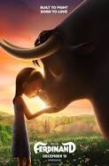

Date of Release : December 15, 2017
Cast :
- John Cena as Ferdinand the Bull
- Kate McKinnon as Lupe, an old goat
- Gina Rodriguez as Una, a hedgehog
- Daveed Diggs as Dos, a hedgehog
- Gabriel Iglesias as Cuatro, a hedgehog
Description :
Ferdinand is a Spanish Fighting Bull who prefers smelling the flowers and practicing non-violence rather than chasing red cloths held by matadors in arenas. But when disaster comes to him, he is taken to a fighting stadium like every bull in Spain, and Ferdinand needs to decide if he is a fighting bull or a flower smelling, generous bull, in order to earn his freedom.